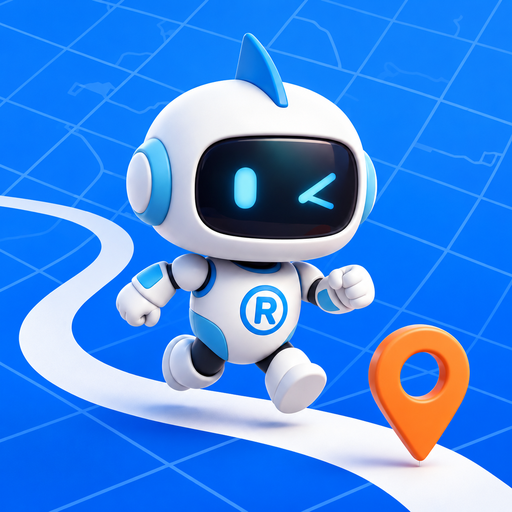

Store RunnerPolitique de confidentialité
Dernière mise à jour : 27 septembre 2026.
Cette politique s’applique à Store Runner, outil de planification de tournées et de visites magasins, qu’il soit utilisé dans un navigateur sur store-runner.fr, installé comme application web (PWA) ou via l’application Android, qui affiche ce même site.
- Store Runner ne demande aucun compte et n’a pas de serveur qui conserve vos données : vos magasins, visites, notes, planning et photos restent enregistrés sur votre appareil.
- Aucune publicité, aucun outil de mesure d’audience, aucun cookie de suivi. Vos données ne sont ni vendues ni utilisées pour du profilage.
- Certaines fonctions, uniquement lorsque vous les utilisez, envoient des informations limitées à des services tiers (IA, cartographie, géocodage, Google Agenda). Elles sont détaillées ci-dessous.
1. Données traitées et finalités
Données de travail que vous saisissez
Magasins de votre secteur (enseigne, adresse, coordonnées, horaires, priorité, téléphone ou site public lorsqu’ils sont connus), visites et comptes rendus, actions à suivre, opportunités, notes, rendez-vous, planning, données de performance que vous importez, contrats et suivi de l’Espace Cuisinistes, ainsi que votre profil (nom et nom de secteur si vous les renseignez, point de départ, jours et horaires de travail).
Finalité : préparer et suivre vos tournées, vos visites et votre activité terrain.
Photos
Les photos que vous prenez ou importez dans la fiche d’un magasin sont compressées puis enregistrées sur l’appareil, avec leurs étiquettes (magasin, visite, famille, avant/après, catégorie, date).
Finalité : garder une mémoire visuelle par magasin et illustrer vos comptes rendus. Les photos ne sont envoyées à aucun service : elles ne quittent l’appareil que si vous les partagez, les téléchargez ou les exportez vous-même.
Localisation
Uniquement lorsque vous appuyez sur une action de localisation (« Utiliser ma position actuelle » pour le point de départ, ou recherche d’un magasin autour de vous), l’application demande la position GPS à votre appareil, avec son autorisation. Aucune localisation n’est suivie en arrière-plan.
Finalité : définir votre point de départ ou trouver un magasin proche.
Google Agenda (facultatif)
Si vous connectez Google Agenda, Store Runner lit, en lecture seule, vos agendas et les événements de la période de planning consultée (titre, lieu, dates et heures, journée entière, annulation). Il n’écrit, ne modifie et ne supprime aucun événement.
Finalité : tenir compte de vos rendez-vous et indisponibilités dans le planning. Le détail est décrit dans la politique relative à Google Agenda.
Données techniques
L’application conserve quelques réglages techniques sur l’appareil (version installée, dernière nouveauté vue, cache hors ligne, cache de temps de trajet). Comme pour tout site web, les services qui répondent aux requêtes de votre navigateur (hébergeur et services tiers ci-dessous) reçoivent votre adresse IP et des informations techniques standard du navigateur.
2. Où les données sont stockées
- Sur votre appareil, dans le stockage du navigateur ou de l’application : IndexedDB (données de l’application et photos) et
localStorage(réglages, copies de secours locales). - Le jeton d’accès Google Agenda est temporaire et conservé uniquement dans
sessionStorage, le temps de la session ; il n’est jamais inclus dans une sauvegarde. - Les fichiers de l’application sont mis en cache sur l’appareil pour permettre l’usage hors ligne.
- Store Runner n’a pas de base de données en ligne : l’éditeur n’a pas accès à vos données.
3. Sauvegarde et restauration
L’application garde sur l’appareil quelques copies de secours automatiques de vos données, pour pouvoir revenir en arrière après une erreur. Les boutons « Sauvegarder mes données » et d’export photo créent un fichier (JSON pour les données, ZIP pour les photos) que vous enregistrez où vous le souhaitez. La restauration relit un fichier que vous choisissez. Aucune sauvegarde n’est envoyée automatiquement vers un service en ligne ; le fichier exporté peut contenir les événements Google Agenda déjà importés, mais jamais le jeton Google.
4. Services tiers utilisés
Ces services ne sont sollicités que par l’action ou l’écran correspondant. Chacun traite les requêtes selon sa propre politique de confidentialité.
Assistant IA et Worker Store Runner
Les fonctions IA sont déclenchées par vous : question à l’assistant, correction d’une note, génération d’un compte rendu de visite, import de magasins à partir d’un texte collé. Le texte concerné et un contexte limité sont alors envoyés à la passerelle de Store Runner, un Worker hébergé chez Cloudflare, qui interroge le modèle Cloudflare Workers AI et, en secours, Groq.
- Contenu possible selon la fonction : votre question ou note, le texte collé, le contenu de la visite (constats, 6P, actions), le nom de profil et de secteur, des magasins (enseigne, ville, adresse, coordonnées, fréquence, priorité, dernière visite), le planning, des résumés de visites, d’actions et de performance.
- Jamais envoyé : les photos (seul leur nombre peut figurer dans un compte rendu), le contenu de vos événements Google Agenda, le jeton Google.
- Le Worker ne stocke pas les contenus reçus : il transmet la demande au modèle et renvoie la réponse.
Cartographie, itinéraires et géocodage
- OpenStreetMap / Nominatim : la ville, l’adresse ou le nom de magasin que vous recherchez, ou vos coordonnées GPS lorsque vous demandez votre position, pour convertir une adresse en coordonnées et inversement. Les fonds de carte OpenStreetMap sont chargés lorsque vous affichez une carte.
- OSRM (serveur de démonstration public) : les coordonnées des étapes d’une tournée (magasins et point de départ), pour calculer temps et distances de trajet.
- Serveurs publics Overpass (OpenStreetMap) et geo.api.gouv.fr : la région et les enseignes choisies pour rechercher des magasins par région ; aucune donnée personnelle.
- Google Maps et Plans (Apple) : uniquement lorsque vous ouvrez un itinéraire ou une recherche d’hôtel ; l’adresse concernée est transmise dans le lien ouvert.
Google Identity Services et l’API Google Agenda, uniquement si vous connectez Google Agenda. Les appels partent directement de votre navigateur vers Google. L’utilisation des données reçues des API Google respecte la Google API Services User Data Policy, y compris les exigences de Limited Use.
Hébergement et bibliothèques
Le site est hébergé par GitHub Pages et servi via Cloudflare. Les bibliothèques Leaflet (carte) et PDF.js (lecture d’un PDF que vous importez, analysé sur l’appareil) sont téléchargées depuis les CDN unpkg et jsDelivr. Ces prestataires reçoivent les informations techniques de connexion (adresse IP, navigateur), pas vos données de travail.
5. Partage des données
Store Runner ne vend, ne loue et ne partage vos données avec personne à des fins commerciales ou publicitaires. En dehors des envois techniques décrits à la section 4, déclenchés par vos actions, vos données ne sont transmises que lorsque vous les partagez vous-même (copie ou partage d’un compte rendu, partage ou export de photos, fichier de sauvegarde).
6. Durée de conservation
Les données restent sur votre appareil tant que vous ne les supprimez pas. Les copies de secours locales sont limitées aux plus récentes. Le jeton Google Agenda expire à la fin de la session ou à la déconnexion.
7. Suppression et vos droits
- Supprimer un élément : directement dans l’application (magasin, visite, photo, rendez-vous…).
- Supprimer toutes les données : effacer les données du site dans les réglages du navigateur, ou désinstaller la PWA / l’application Android et effacer ses données.
- Google Agenda : se déconnecter depuis l’application (le jeton est révoqué et les événements importés sont retirés), ou retirer l’accès depuis votre compte Google.
Comme l’éditeur ne détient aucune copie de vos données, il ne peut ni les consulter ni les supprimer à votre place : la suppression sur l’appareil est définitive. Vous disposez des droits prévus par le RGPD (accès, rectification, effacement, opposition) et pouvez adresser une réclamation à la CNIL.
8. Contact
Pour toute question sur cette politique ou demande relative à vos données, contactez l’éditeur de Store Runner (projet indépendant) en ouvrant un ticket sur le dépôt GitHub du projet : github.com/REDNEWT69/Chef-Secteur/issues. N’y publiez pas de données personnelles.
9. Modifications
Cette politique est mise à jour si le fonctionnement de Store Runner ou les services utilisés évoluent. La date en haut de page indique la version applicable.